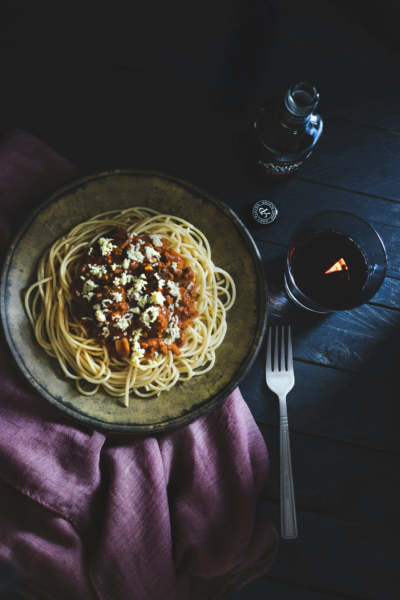

Lentil Bolognese

Description
A hearty vegetarian alternative to the classic bolognese sauce.
Ingredients
- 1 tbsp olive oil
- 1 onion, diced
- 1 cloves of garlic, pressed
- 2 carrots, finely diced
- 2 sticks of celery, finely diced
- 1 cup red lentils, raw
- 2 tins chopped tomatoes (400g each)
Recipe
- Heat the oil in a large saucepan
- Fry the onions until translucent
- Add the garlic and fry until fragrant
- Throw in the carrots and celery and fry until slightly softened
- Stir in the lentils and the chopped tomatoes
- Fill one of the tomato tins with water and pour that in
- Simmer until the lentils are cooked through, adding more water if needed
- Add salt and pepper to taste and serve with spaghetti or the pasta of your choice!
Home